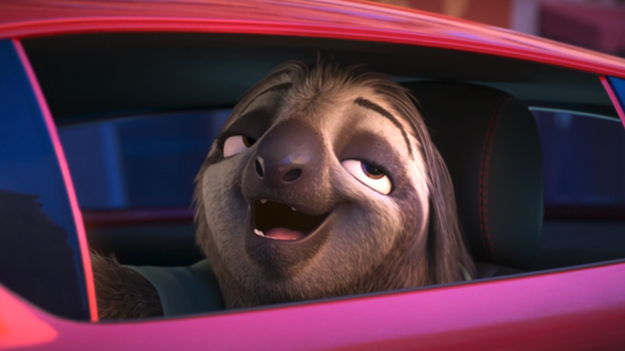

Author: Sarah El-Mahmoud
Zootopia 2 picks up just a week after the events of the first movie at a time where Nick and Judy are still figuring out how to be an effective team. They find themselves engrossed in a new mystery that will answer why reptiles haven’t been living in Zootopia. When I asked the filmmakers, here’s how Howard teased Flash’s return:
I think we find that anytime we can make Judy and or Nick and both uncomfortable. [It’s] sort of the key to their comedy. We were talking to Andrew Stanton about this and some of the joy of these movies is really just seeing two great characters play off each other. And there's just something so amazing about that. And that's really been the core of the whole Zootopia [movies].
This totally makes sense! Based on Howard’s response, it sounds like Flash will pop out in a place where Nick and Judy will need to be uncomfortable, and perhaps slow them down again. I’m actually quite happy to be caught off guard by his return after he already had a popular scene when the first movie came out. As Bush (who is also Walt Disney Animation’s CCO) added:
The other part is we actually tried to not compete because it feels, if you try to do that same thing again, audiences are smart and savvy and they'll go, ‘Oh, I remember that last one.’ You're trying to do that thing again. And so as much as we could, we just looked into the animals we have in this world and what are different things we could do with them that are also really entertaining, but hopefully don't repeat themselves.
After going to Walt Disney Animation and seeing 20 minutes from the movie, I can definitely tease there’s a lot of sharp comedy and fun to be had regarding the world of Zootopia. I cannot wait to return to this world when the movie comes out on November 26, and what Flash Slothmore is up to, of course!
Like this article? For more stories like this, follow us on MSN by clicking the +Follow button at the top of this page.